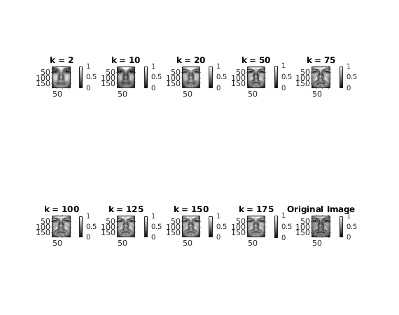
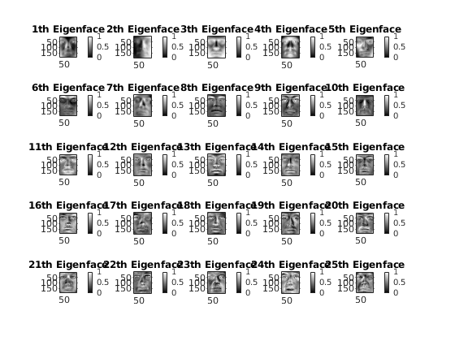

Face reconstruction of "CroppedYale/yaleB01/yaleB01_P00A+000E+00.pgm"
tic; close all; clear; clc; cd("../data/"); dimension = 32256; % Dimension of images 192*168 numFolders = 38; % Number of folders to get images from mainDir = "CroppedYale/"; % Name of main directory identifier = "yaleB"; % Identifier to identify folders which contain useful images images = zeros(dimension, 0); % All images as column vector of size dimension % Reading images countImages = 0; % Number of images read so far in images cd(mainDir); % Change to main Directory folders = dir(identifier + "*"); % Subdirectories for i=1:size(folders,1) cd(folders(i).name); % Change directory to a subdirectory files = dir("*.pgm"); % Reading images from subdirectory for j=1:size(files,1) img = imread(files(j).name); countImages = countImages + 1; images(:,countImages) = double(img(:)); end cd(".."); % Change directory back to main Directory; end cd(".."); % Change directory back to parent meanImage = mean(images,2); % Mean of original images images = images-meanImage; % Mean deducted original images % Using economical svd [U,~,~] = svd(images, 'econ'); eigenVectors = U; % Take all eigenvectors % Face reconstruction of "CroppedYale/yaleB01/yaleB01_P00A+000E+00.pgm" % which is images(:,1) k = [2, 10, 20, 50, 75, 100, 125, 150, 175]; % Values of eigenvectors to consider for reconstruction reconstructedImages = zeros(192,168,size(k,2)); % 3D vector to store reconstructed images using each value of "k" originalImage = reshape(meanImage + images(:,1),[192 168]); % originalImage in form of matrix figure('Name', 'Face reconstruction of "CroppedYale/yaleB01/yaleB01_P00A+000E+00.pgm"'); for l=1:size(k,2) keigenvectors = eigenVectors(:,1:k(l)); % k eigen vectors corresponding to k maximum eigenvalues imgCoeffs = keigenvectors'*(images(:,1)); % Linear Cofficients for image to be reconstructed if there were "k" eigenvectors img = reshape(meanImage + keigenvectors*imgCoeffs,[192 168]); subplot(2,5,l); imshow(mat2gray(img)); colormap gray; colorbar; title("k = " + sprintf("%d",k(l))); end subplot(2,5,10); imshow(mat2gray(originalImage)); colormap gray; colorbar; title("Original Image");
Plotting top 25 eigenfaces
figure('Name','Top 25 Eigenfaces'); top25eigenVectors = eigenVectors(:,1:25); for i=1:25 img = reshape(top25eigenVectors(:,i), [192 168]); subplot(5,5,i); imshow(mat2gray(img)); colormap gray; colorbar; title(sprintf("%d",i) + "th Eigenface"); end cd("../code/"); toc;
Elapsed time is 45.326791 seconds.